Higgsfield(Ideogram 4.0)로 방향을 탐색한 뒤 벡터로 직접 구성 · 글자는 윤곽선(path) 변환 · 기존 로고 미사용 · ⏸ 아이콘형은 동종 업체와 겹쳐 회피
원판의 쉼표 + 세리프 대문자
늘임표 호 + 점 · 확장 그로테스크
PAUSE—STUDIO · 대시 위 핀
아치 + 떠 있는 점 · 부드러운 세리프

가로선 7줄 PAUSE · 주홍 재생 헤드